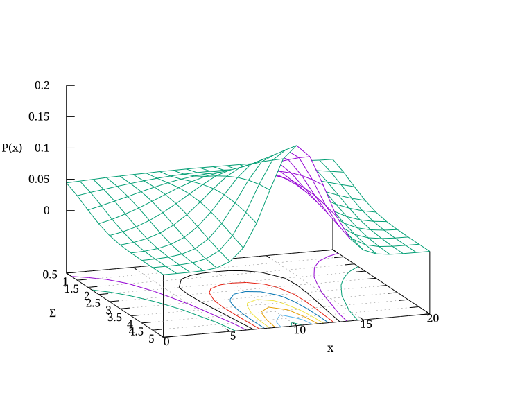

Module io.jenetics.base
Package io.jenetics
Class GaussianMutator<G extends NumericGene<?,G>,C extends Comparable<? super C>>
java.lang.Object
io.jenetics.AbstractAlterer<G,C>
io.jenetics.Mutator<G,C>
io.jenetics.SamplerMutator<G,C>
io.jenetics.GaussianMutator<G,C>
- Type Parameters:
G- the gene typeC- the allele type
- All Implemented Interfaces:
Alterer<G,C>
public class GaussianMutator<G extends NumericGene<?,G>,C extends Comparable<? super C>>
extends SamplerMutator<G,C>
The GaussianMutator class performs the mutation of a
NumericGene.
This mutator picks a new value based on a Gaussian distribution, defined by
the GaussianMutator.Shape parameter of the mutator.

- Since:
- 1.0
- Version:
- 8.3
-
Nested Class Summary
Nested ClassesModifier and TypeClassDescriptionstatic final recordThe parameters which define the shape of gaussian distribution of new gene values. -
Field Summary
FieldsModifier and TypeFieldDescriptionstatic final GaussianMutator.ShapeThe default shape of the mutator:Shape[shift=0, sigma=1].Fields inherited from class io.jenetics.SamplerMutator
samplerFields inherited from class io.jenetics.AbstractAlterer
_probabilityFields inherited from interface io.jenetics.Alterer
DEFAULT_ALTER_PROBABILITY -
Constructor Summary
ConstructorsConstructorDescriptionCreate a new Gaussian mutator with the default mutation probability,Alterer.DEFAULT_ALTER_PROBABILITY, and default distribution shape,DEFAULT_SHAPE.GaussianMutator(double probability) Crate a new Gaussian mutator with the given mutation probability and the default shape,DEFAULT_SHAPE.GaussianMutator(double probability, GaussianMutator.Shape shape) Create a new Gaussian mutator with the given parameter.Create a new Gaussian mutator with the given mutation value distribution shape and the default mutation probability,Alterer.DEFAULT_ALTER_PROBABILITY. -
Method Summary
Methods inherited from class io.jenetics.SamplerMutator
mutateMethods inherited from class io.jenetics.AbstractAlterer
probability
-
Field Details
-
DEFAULT_SHAPE
The default shape of the mutator:Shape[shift=0, sigma=1].
-
-
Constructor Details
-
GaussianMutator
Create a new Gaussian mutator with the given parameter.- Parameters:
probability- the mutation probabilitiesshape- the shape of the mutation value distribution
-
GaussianMutator
Create a new Gaussian mutator with the given mutation value distribution shape and the default mutation probability,Alterer.DEFAULT_ALTER_PROBABILITY.- Parameters:
shape- the mutation value distribution shape
-
GaussianMutator
Crate a new Gaussian mutator with the given mutation probability and the default shape,DEFAULT_SHAPE.- Parameters:
probability- the mutation probability
-
GaussianMutator
public GaussianMutator()Create a new Gaussian mutator with the default mutation probability,Alterer.DEFAULT_ALTER_PROBABILITY, and default distribution shape,DEFAULT_SHAPE.
-